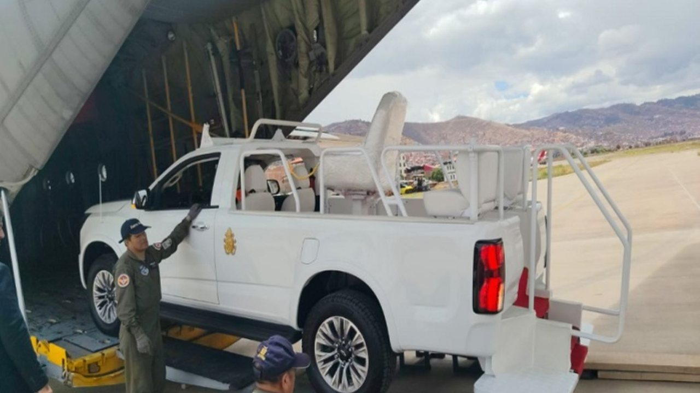
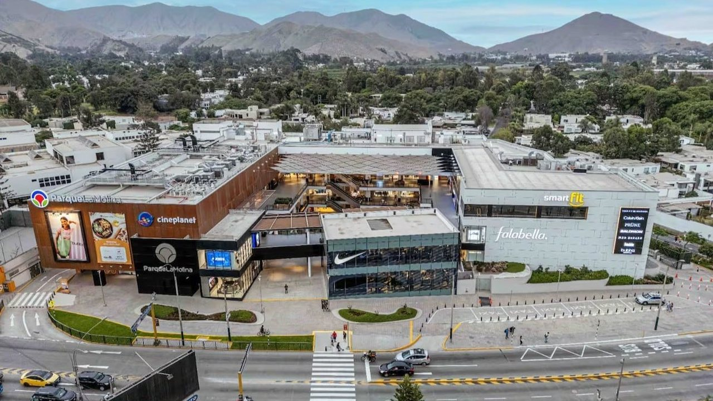
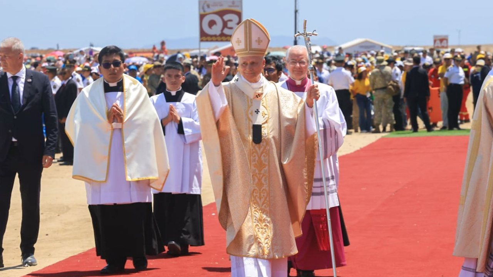
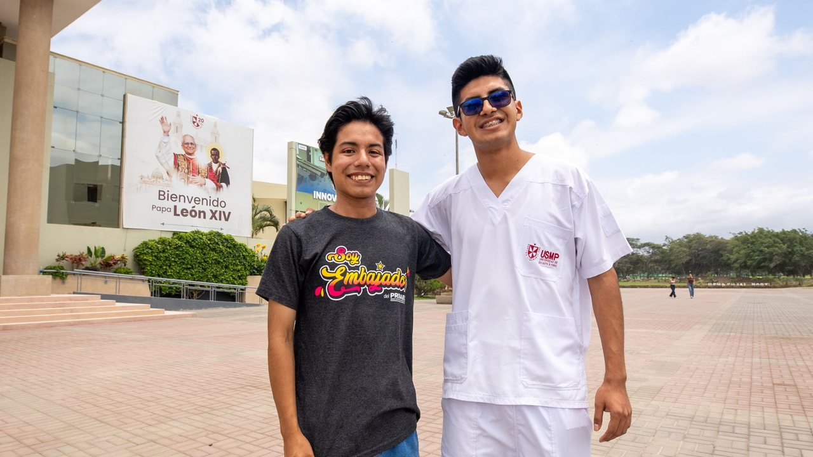
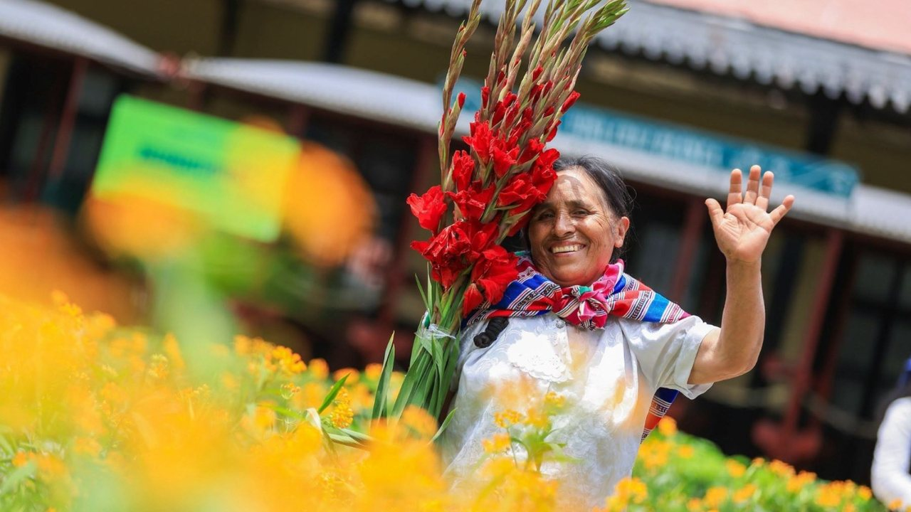
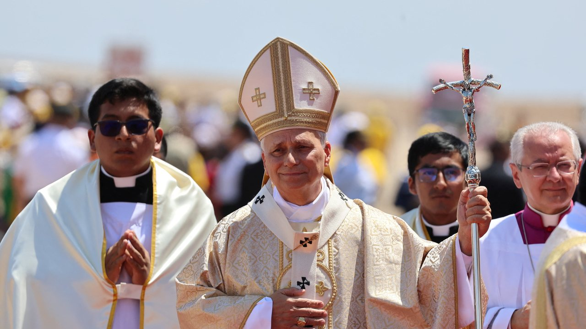
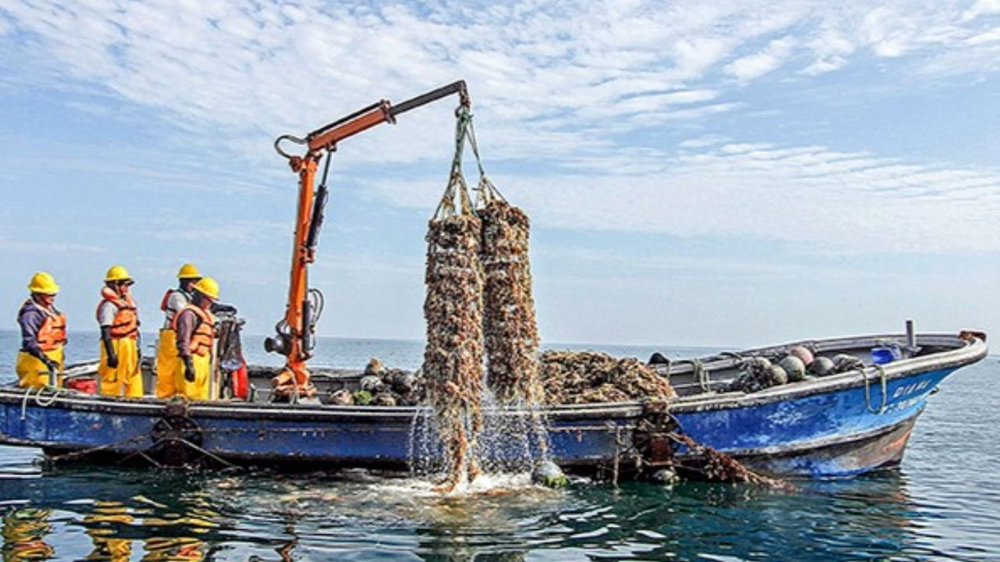
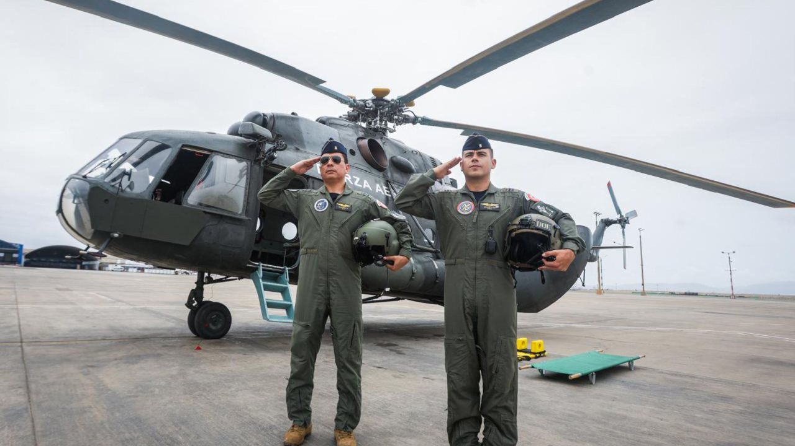
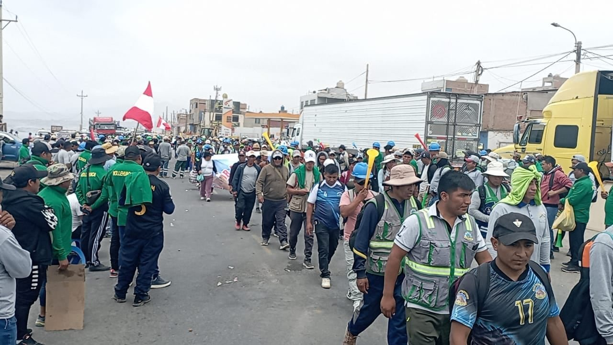

Internacional Basket Peruano Deportes Ocio ESTADOS UNIDOS VIDEOS TEC LÍBERO Tiempo Extra PREVIA Perú vs Bolivia por amistoso EN DIRECTO Argentina vs Uruguay por amistoso internacional Fútbol Peruano Selección Peruana ¡Determinante!









Internacional Basket Peruano Deportes Ocio ESTADOS UNIDOS VIDEOS TEC LÍBERO Tiempo Extra PREVIA Perú vs Bolivia por amistoso EN DIRECTO Argentina vs Uruguay por amistoso internacional Fútbol Peruano Selección Peruana ¡Determinante!
"Esta es la ciudad del Papa, del Papa peruano": la emotiva vuelta a casa de León catorce a Chiclayo Fuente de la imagen, Paulo Koba.
Brigadas de Hospital Perú y cuatro ambulancias brindaron 139 atenciones por agotamiento, deshidratación, problemas de presión arterial y otras descompensaciones en la Plaza de Armas de Lima y el Estadio Nacional.
El papa León catorce confirmó su visita apostólica al Perú, del 11 al 16 de noviembre, para recorrer Lima, Chiclayo (Lambayeque), Santa Cruz (Cajamarca), Cusco y Pucallpa (Ucayali), donde lo esperan millones de fieles.
Ana Siucho empezó una rutina de ejercicios desde hace varios meses. Puedes ver Ana Siucho impacta a todos con renovada figura tras final de su matrimonio con Edison Flores y recibe halagos en redes sociales. En lo personal esto no tiene nada que ver con estar o no con pareja", respondió.
El viernes 13 de noviembre de 2026 será día no laborable compensable en Cajamarca, La Libertad, Lambayeque y Piura, debido a las actividades previstas durante la visita apostólica del papa León catorce al Perú.
El Papa León catorce llegó a tierras peruanas este miércoles 11 de noviembre a las. La visita apostólica del papa León catorce se extenderá desde este miércoles 11 hasta el lunes 16 de noviembre de 2026 e incluirá actividades religiosas, encuentros con autoridades, reuniones con jóvenes y celebraciones en distintas regiones del país.
"Tanto académicos como estudiantes están llamados a ejercitar el sentido crítico: busquen siempre aquella sabiduría que ni las máquinas ni los programas informáticos pueden tener", manifestó León catorce.
Google vuelve a apostar por las gafas inteligentes: Gemini será su principal atractivo. El nuevo producto de Google combina inteligencia artificial, diseño y funcionalidades conectadas a sus principales servicios. Las gafas pesan aproximadamente 41 gramos y ofrecen hasta nueve horas de autonomía.
Cada edición dura menos de dos minutos. En la web tienes el resumen de cada historia y el enlace directo al medio original para leerla completa.
Conoce Olfatecho →